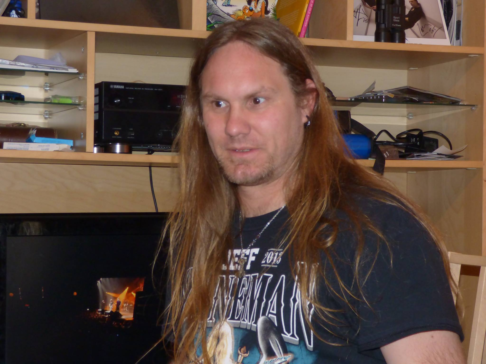

Histoire de l'association
Laurent intégra alors « Darkseum » avec Franck, Sven et Rv ! Ils s’essayèrent à la composition, ne se connaissant pas vraiment niveau maitrise de leurs instruments. Choix difficile mais qui commençait à prendre une bonne forme jusqu’à ce que les gouts musicaux de Sven lui fassent arrêter le groupe…
Après à cause des choix de certaines personnes, « Darkseum » cessa d’exister.
Franck et Laurent se retrouvèrent donc seul. Après, Laurent proposa un nouveau nom pour l'association (qui s'occupera notamment du groupe du même nom) et Franck accepta sans hésiter ; « ORION » était né !
Franck organisa alors des rencontres avec des guitaristes de la région et qui recherchent la même chose que nous. Ils décidèrent donc de ne faire que des reprises pour plus s’amuser et avancer plus vite dans la musique.
Ils ont fait la rencontre de Seb et de Tom qui ont, depuis le mois de mars 2016, intégré le groupe et qui sont devenus tous une « belle » bande d’amis avec de nombreux gouts en commun.
Sven nous a quitté début août, parti trop jeune! Fais la bise à Lemmy et Jeff!! Nous ne t'oublierons jamais, tu nous manques déjà...
